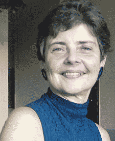

Cláudia foi presidente da Sociedade Brasileira de Computação de 2004 a 2007.
Doutora em Ciência da Computação pela Universidade de Waterloo (Canadá), Cláudia foi presidente da Sociedade Brasileira de Computação de 2004 a 2007. Atualmente é professora da Unicamp, onde fundou o Laboratory of Information Systems (LIS), e professora visitante da Universidade Paris-Dauphine, onde 2015 conquistou o título de Dr Honoris Causa. Tem diversos reconhecimentos internacionais por suas pesquisas e por fomentar a participação de mulheres na área de TI.
Claudia Maria Bauzer Medeiros - Professora titular da UNICAMP.
Alguns marcos do seu trabalho:
- 2006: Claudia Maria, do Instituto de Computação da Universidade Estadual de Campinas, citou aplicações práticas das tecnologias da informação e comunicação para o suporte a pesquisas desenvolvidas na Amazônia.
- 2015: Desenvolve pesquisas em gerenciamento de dados científicos, desafios associados à heterogeneidade, volume e complexidade desses dados, para vários tipos de aplicações multidisciplinares do mundo real, em particular em biodiversidade e planejamento agro-ambiental.